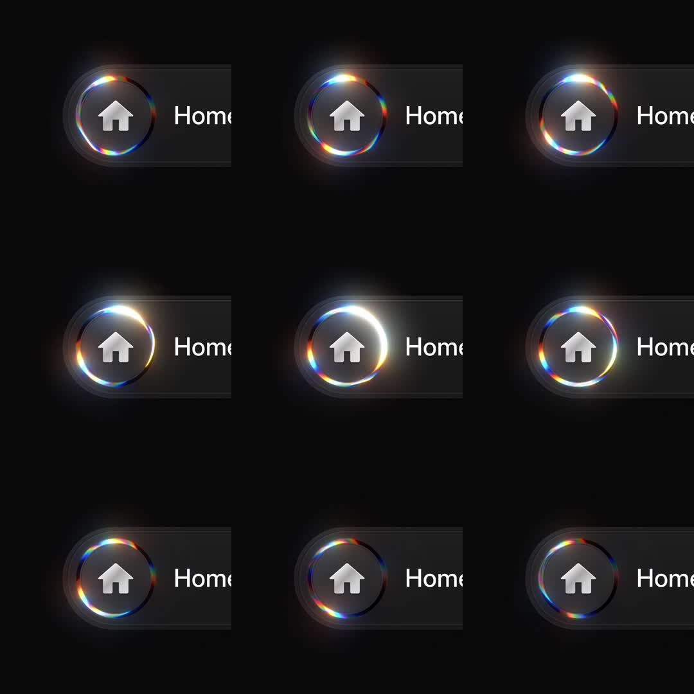

Liquid metal button (circular variant): a dark 'Home' pill whose circular icon is ringed by an iridescent conic-gradient halo - a lens-flare ring with RGB fringing that slowly rotates, its bright arc orbiting the circle while the dark glass body stays still.
Media
Frame-by-frame

0-100%
Black scene; pill with home glyph; the icon ring's specular arc (white core with red/cyan fringe edges) travels around the ring across frames - bottom-left -> top -> right - with soft bloom; label 'Home' static.
Build prompt
Rebuild this interaction 1:1: liquid metal button (circular variant) - a dark "Home" pill whose circular icon is ringed by an iridescent conic-gradient halo: a lens-flare ring with RGB fringing that slowly rotates, its bright arc orbiting the circle while the dark glass body stays still.
## Integration
Integration: stack-agnostic spec - springs given as stiffness/damping, timed motions as duration + curve, canvas/shader notes are perf guidance only; map every value to your framework and animation library of choice.
## Scene
Black scene: dark glass pill with a home glyph icon inside a circle; the icon circle carries the iridescent ring; label "Home" beside it.
## Motion spec
Pattern: ambient orbit.
- The ring's bright arc (specular core + red/cyan fringe) orbits the circle - bottom-left -> top -> right - one revolution every ~5s, strictly linear.
- Soft bloom around the bright arc (blur duplicate at low opacity); bloom intensity constant.
- Pill body, icon glyph, label: perfectly still; the glass face shows only a faint static reflection.
## Calibration
- Orbit ~5s linear, constant angular speed - any easing reads as a wobble.
- The fringe is subtle chromatic edging on the arc, not a rainbow ring.
- Bloom stays soft and low (white/20); a hot glow turns it into a loading spinner.
## Reduced motion
Ring renders as a static iridescent gradient.
## Don't miss
- Only the ring moves - the dark glass body and glyph are frozen; that contrast is the luxury read.
- Arc length ~20-30% of the circumference; a full-ring gradient kills the orbiting-light illusion.
- Fringes sit at the arc's leading/trailing edges (red one side, cyan the other), like real dispersion.
Mechanics
trigger
autoplay ambient
elements
pill, icon circle, iridescent ring (conic gradient)